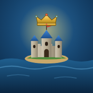

Open Water als App
Leg das Spiel auf deinen Startbildschirm – dann startet es wie eine eigene App, ohne Browser-Leiste.
Schon installiert! Du findest Open Water auf deinem Startbildschirm.
So geht's auf dem iPhone/iPad (Safari):
- Unten auf Teilen tippen
- „Zum Home-Bildschirm“ wählen
- Oben rechts „Hinzufügen“ tippen
So geht's (Chrome/Android):
- Oben rechts auf ⋮ (Menü) tippen
- „Zum Startbildschirm hinzufügen“ oder „App installieren“ wählen